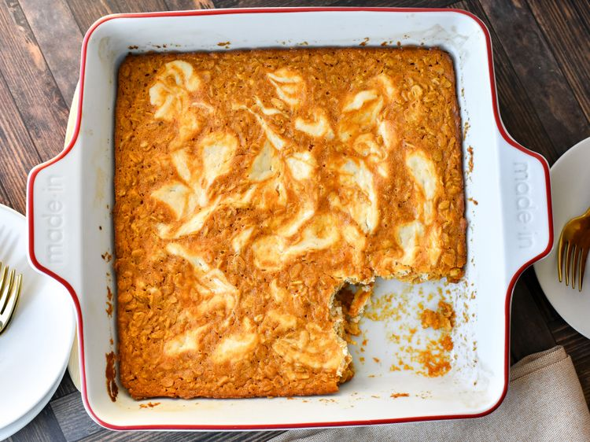

Baked Pumpkin Cheesecake Oatmeal

Description
This baked pumpkin cheesecake oatmeal, made with pumpkin puree and warm pie spices, has a cheesecake swirl that takes it to a whole new level. Serve warm, with an extra drizzle of maple syrup.
Ingredients
Pumpkin Oatmeal
- 2/3 cup pumpkin puree (not pie filling)
- 1/2 cup milk
- 1/3 cup plain yogurt
- 1/4 cup olive oil
- 1 large egg
- 6 tablespoons maple syrup, or to taste
- 1 teaspoon vanilla extract
- 1/2 teaspoon pumpkin pie spice, or to taste
- 1/4 teaspoon ground cinnamon, or to taste
- 1/4 teaspoon salt
- 1 1/4 cups rolled oats
- 1/2 teaspoon baking powder
Cheesecake Swirl
- 4 ounces cream cheese, at room temperature
- 1/4 cup plain yogurt
- 2 tablespoons maple syrup, or to taste
- 1 teaspoon vanilla extract
- 1/2 teaspoon lemon juice
- 1 pinch salt
Steps
- Preheat the oven to 350 degrees F (180 degrees C). Butter a 9x9-inch square pan.
- For oatmeal, in a large bowl, whisk together pumpkin, milk, yogurt, olive oil, egg, maple syrup, vanilla, pumpkin pie spice, cinnamon, and salt until thoroughly smooth and combined. Stir in oats and baking powder until incorporated. Pour mixture into the prepared pan.
- For cheesecake swirl, beat cream cheese in a bowl with an electric mixer until smooth. Add in 1/4 cup yogurt, 2 tablespoons maple syrup, 1 teaspoon vanilla, lemon juice, and pinch of salt and beat until smooth and combined.
- Place dollops of cheesecake swirl over pumpkin oatmeal. Use a butter knife to swirl cheesecake in a few times.
- Bake in the preheated oven until oatmeal looks set, 40 to 50 minutes. Allow mixture to cool slightly before serving.
Original recipe at Baked Pumpkin Cheesecake Oatmeal | allrecipes.com
Back to home